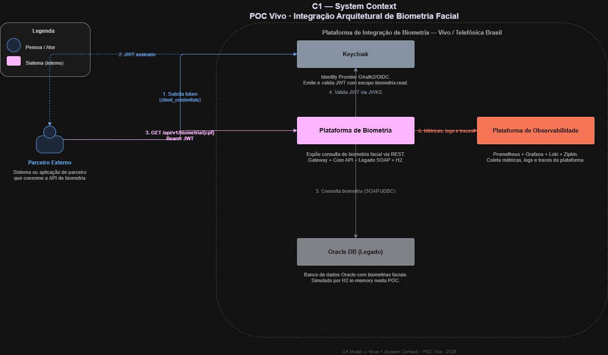
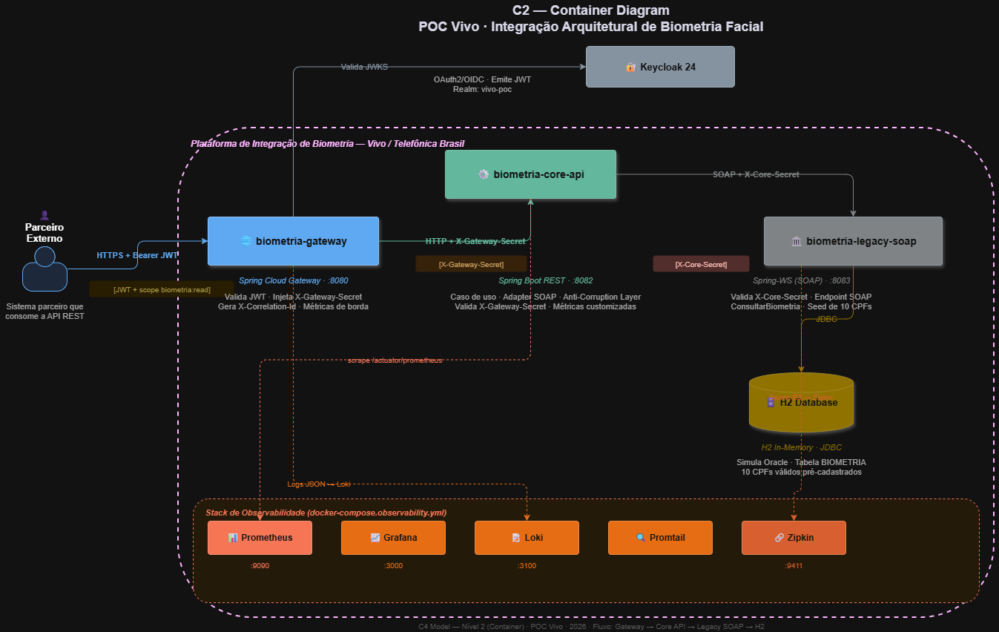
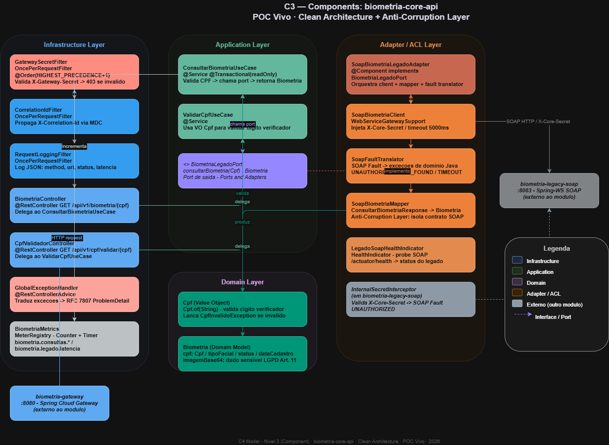
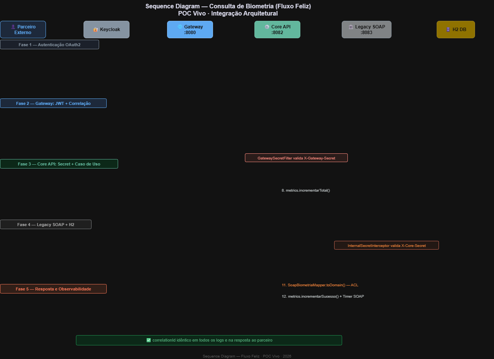

vivo-poc · Client Credentials · JWT RS256 · Scope biometria:readX-Gateway-Secret no Core API. Core API injeta X-Core-Secret no SOAP legado. Acesso direto a qualquer serviço interno retorna 403/SOAP Fault sem o secret correto.
Visão do sistema como uma caixa preta — atores externos, sistemas vizinhos e relações de alto nível

Containers: biometria-gateway · biometria-core-api · biometria-legacy-soap · H2 · Keycloak · Stack de Observabilidade

Clean Architecture com 4 camadas: Infrastructure · Application · Domain · Adapter/ACL

12 passos em 5 fases: Auth OAuth2 → Gateway JWT → Core API Secret → SOAP Interceptor → Resposta + Observabilidade

| # | Ator → Destino | Ação | Segurança Aplicada |
|---|---|---|---|
| 1 | Parceiro → Keycloak | POST /token com client_id + client_secret (client_credentials) | mTLS |
| 2 | Keycloak → Parceiro | JWT assinado RS256, expiry 5min, scope biometria:read | RS256 |
| 3 | Parceiro → Gateway | GET /api/v1/biometria/{cpf} + Authorization: Bearer JWT | JWT Bearer |
| 4 | Gateway → Keycloak | Valida JWT via JWKS (/realms/vivo-poc/protocol/openid-connect/certs) | JWKS RS256 |
| 5 | Gateway → Core API | Roteia req + X-Gateway-Secret + X-Correlation-Id gerado | X-GW-Secret |
| 6 | Core API filter | GatewaySecretFilter valida X-Gateway-Secret → 403 se ausente | Filter Order -1 |
| 7 | Core API domain | Cpf.of(cpf) valida dígito verificador → ConsultarBiometriaUseCase | Domain VO |
| 8 | Core API → SOAP | SoapBiometriaClient + X-Core-Secret + traceId B3 propagado | X-Core-Secret |
| 9 | SOAP → H2 | InternalSecretInterceptor valida → SELECT biometria WHERE cpf=? | SOAP Interceptor |
| 10 | Core API → GW → Parceiro | BiometriaResponse + X-Correlation-Id no response | CPF mascarado |
docker compose -f docker-compose.yml -f docker-compose.observability.yml up -d
Arquitetura de Integração · Vivo / Telefônica